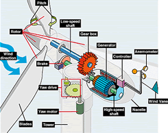

What is wind?
Wind is moving air. While you can't touch it, you can feel it. It is caused by the sun heating the earth differently at different zones. The air at the equator is usually hotter than the air at temperate zones. This creates pressure differences. The warm air rises and moves toward the poles and the cool air sinks and moves to the equator. The warm air creates low pressure systems and the cooler air creates high pressure systems. Wind usually blows between these systems.
The Wind Turbine
We first harnessed wind through sails, which have existed since at least about 3000 BCE. This piece of cloth allowed us to travel great distances across water. The sail was then used to create the first windmills, which have been referenced since AD 644 in Persia. This was the first time we used the horizontal-axis design. These mills were used for irrigation and grinding. Today, windmills have been improved and are now used for a different purpose: the generation of electricity.
This diagram by the National Renewable Energy Laboratory and the U.S. Department of energy shows the inside of a horizontal-axis wind turbine.
The modern wind turbine harnesses wind through the aerodynamic force from the blades, which are structured similarly to a helicopter's propeller or an airplane's wing. The flowing air creates an air pressure imbalance which causes lift and drag. The lift force is greater, which makes the rotor turn. The rotor connects to a generator either directly or through a gearbox. This produces electricity.
There are two kinds of wind turbine. The vertical-axis and the horizontal-axis. The horizontal-axis turbine is the more common of the two designs and is usually what we associate with the word "windmill" or "wind turbine". It has a head similar to an electric fan which allows it to rotate towards the direction of the wind. The vertical-axis turbines, on the other hand, are omnidirectional and do not need to pivot. They have different uses. The horizontal-axis turbines are commonly used in larger-scale applications while vertical-axis turbines are used in residential or smaller-scale applications.
Pros and Cons of Wind Energy
| Pros | Cons |
|---|---|
| Clean and sustainable | Depends on the weather |
| Creates jobs | Requires extra transmission |
| Space efficient | May disturb wildlife |
| Saves water | May be noisy and visually unappealing |
Pro 1: Clean and sustainable
Wind energy harnesses the wind, which means there is no need for fuel. This means that there will be no air pollution from burning and no need to look for other resources to power the turbine.
Con 1: Depends on the weather
Since wind energy needs the wind, some days may not see any production. Some turbines also do not work in turbulent winds.
Pro 2: Creates jobs
In the year of 2020, the wind sector had 100,000 employees in the United States. It is one of the fastest growing sectors
Con 2: Requires extra transmission
Wind farms are usually built in remote areas, which means transmission lines need to be built from these farms to the cities which use more energy.
Pro 3: Space Efficient
Wind farms can be built on already used land, such as farms. They are tall instead of wide, so it needs less land area to generate power.
Con 3: May Disturb Wildlife
Since wind turbines are tall, birds and other airborne wildlife may fly into the turbines and die. However, this may be mitigated due to recent technological developments and proper planning.
Pro 4: Saves water
Since wind doesn't have any thermal components, no cooling is required. This means water is saved because water wouldn't be used for regulating temperature
Con 4: May be noisy and visually unappealing
Wind turbines are very large structures. They are also mostly built in remote areas. This means that they may obscure any scenery in the vicinity, and people living near wind farms may find noise an issue as well.